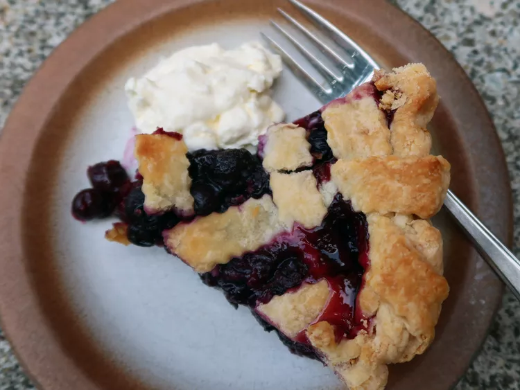

Lemon Blueberry Pie

I love blueberry pie, but sometimes it can taste a little ...monochromatic. Here, lemon zest, lemon juice, and diced preserved lemon add a burst of bright flavor to every bite.
Ingredients
- pastry for a 9-inch double-crust pie, chilled
- flour for dusting
- 6 cups fresh blueberries
- 3/4 cup sugar
- 2 tablespoons tapioca starch
- 1 tablespoon cornstarch
- 1 tablespoon lemon zest
- 2 tablespoons fresh lemon juice
- 1/4 cup preserved lemon
Directions
- On a lightly floured work surface, roll out half of the pie dough to fit a 9-inch pie dish. Gently fit it into the pan and trim edge to a 1/2-inch overhang. Cover with plastic wrap and refrigerate for at least 30 minutes.
- Roll out remaining dough into a circle and transfer to a sheet of parchment, baking sheet, or flat surface. Use a pastry wheel to cut into 1/2-inch strips. Cover with plastic wrap and refrigerate while you prepare the filling.
- Rinse and pick over blueberries to remove any stems; set aside. Combine sugar, tapioca starch, and cornstarch in a bowl and mix well (see Note). Add lemon juice, lemon zest, and diced preserved lemon. Toss blueberries with the sugar mixture.
- Preheat the oven to 425 degrees F
- Pour blueberry filling into chilled pie crust.
- Lay two strips of pastry over the filled pie in an X shape. Continue adding strips, alternating over-and-under, for the lattice pattern.
- Trim the lattice strips to a half-inch overhang, tuck them under the bottom crust, and crimp the edge to seal. Place the pie dish on a rimmed baking sheet to catch any drips.
- Bake in the preheated oven for 25 minutes, or until the edges of the crust are golden brown. Reduce the temperature to 350 degrees F (175 degrees C). Loosely cover the pie with foil to prevent over-browning. Continue baking until the juices are bubbling and the crust is a rich golden brown, about an hour more. The internal temperature of the pie should be 200 degrees F (93°C) on an instant-read thermometer.
- Cool pie on a wire rack for 4 hours to allow filing to set fully.